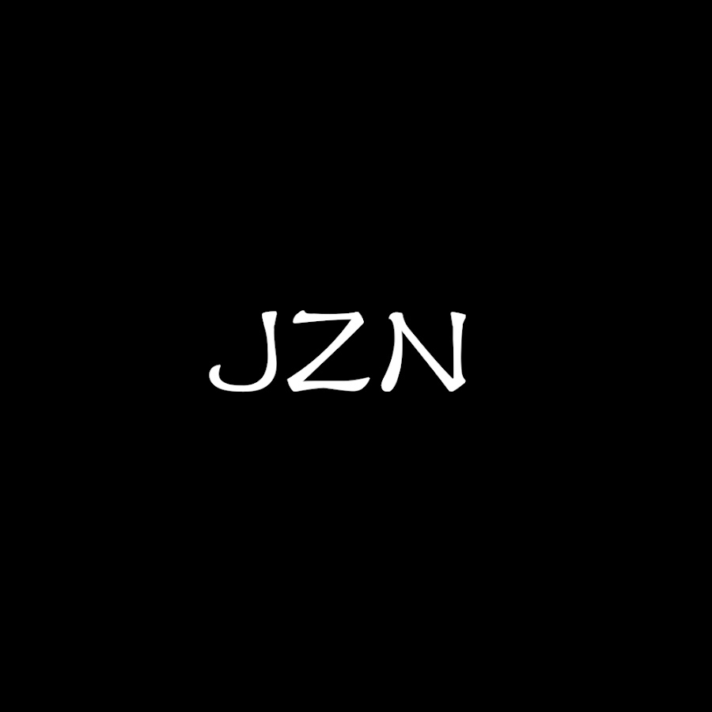

Welcome to Josh The AZN's Portfolio
Here you'll find some of my latest tracks and videos, as well as a bit about me and my background in music production.
Tracks
-
Time Flows
This future bounce track uses a vocal samples from "Wish of a Songbird" by popular vTuber, Enna Allouette!
-
Fated
Hardcore style leads over gothic-type chords! Gothic-hardcore turns out to be very powerful.
Videos
-
EEEAAAOOO (Meowsynth remix)
A remix of popular song by Patricia Taxxon, using a Meowsynth plugin. My most viral video to date!
-
Mess of Calamity
Hardstyle leads over Gothic chord patterns, with a touch of dubstep.
About Me
Hi there! My name is Josh The AZN and I'm a music producer based in the United States. I've been making music for four years and specialize in EDM (Electronic Dance Music). Some of my biggest influences include Camellia, CS4W, and the talents in Hardcore Tano*C.
When I'm not making music, I love playing Valorant and Beatboxing. Feel free to reach out and connect with me!
Contact Me
Form is currently not functional, email me at "taivilay@gmail.com".